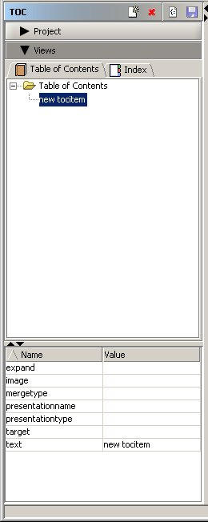
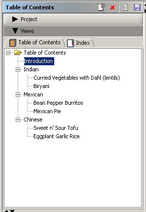

Now we will add entries to our Table of Contents.
To add , we go to the Table of Contents tab.

- Go to the Table of Contents tab.
- Select the entry below which you want to add the new entry.
- Click the
 button in the toolbar.
button in the toolbar. - A "new tocitem" entry will be added.
- 
- The "new tocitem" entry should be already selected. If not, select the entry.
- The Properties panel will display the properties of this entry
- Click the value column of "text" property and change the value to "Introduction"
- Click the value column of "target" property. Change the value to "intro_html". You can also use the "..." button to display a dialog which will assist you in selecting a target.
- Optionally, you can provide values for other properties also.

Next: Add Index Entries